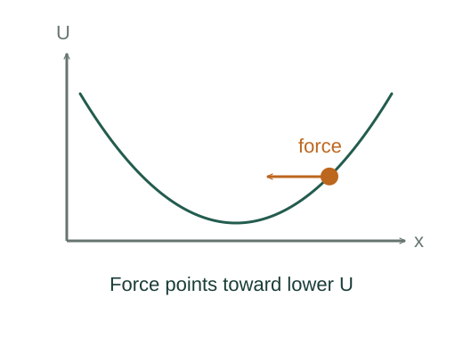

Derive force from potential energy
Potential energy packages path-independent work into a function of position. Its gradient tells us the direction and strength of the associated conservative force.
What the symbols mean
U: potential energy; 𝐅conservative: conservative force; x: position coordinate. Only differences in U affect this force.
When this applies
The force is conservative in the region considered. In one dimension U is differentiable; in several dimensions use 𝐅 = −∇U.
Developing the argument

Require path-independent work
Between two fixed positions, a conservative force does the same work along every allowed path. This permits us to assign a potential difference to the two endpoints.
Choose the sign of potential energy
If the force does positive work and kinetic energy increases, the corresponding potential decreases. Define the potential difference to enforce this energy exchange.
A closer lookHow does work change kinetic energy? ↗Look at a very small displacement
For displacement dx in one dimension, the potential change is dU = −Fₓ dx. Divide by dx to obtain the local force.
Recover familiar examples
For U = mgy, differentiating gives Fᵧ = −mg. For U = ½kx² it gives Fₓ = −kx. A local minimum of U is a stable equilibrium if the surrounding force points back toward it.
A worked example
For U(x) = (2 J/m²)x², the force is Fₓ = −(4 N/m)x. At x = 0.50 m it is −2.0 N.
Derivation behind this calculation ↗A point to keep straight
Potential energy belongs to an interacting system. Adding a constant to U changes no predicted force.
Check the assumptions and derivation ↗